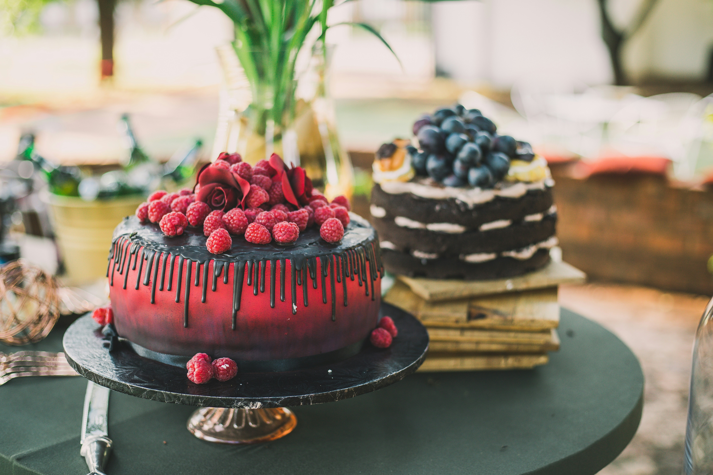

About This Recipe
Enjoy a soft, fluffy homemade vanilla cake with a sweet aroma and delicious flavor. This simple cake is perfect for birthdays, family gatherings, or an afternoon treat. Serve it plain or decorate it with your favorite frosting.
Preparation
20 minutes
Baking
30–35 minutes
Servings
8 slices
Difficulty
Easy
Ingredients
Prepare these ingredients before you start baking:
- 2 cups all-purpose flour
- 1 cup granulated sugar
- ½ cup unsalted butter, softened
- 2 large eggs
- ¾ cup milk
- 2 teaspoons baking powder
- 1 teaspoon vanilla extract
- ¼ teaspoon salt
Optional Decorations
- Powdered sugar for dusting
- Fresh strawberries or other fruit
Step-by-Step Instructions
- Prepare the oven: Preheat your oven to 180°C (350°F). Grease a cake pan and lightly dust it with flour.
- Mix the dry ingredients: In a bowl, combine the flour, baking powder, and salt. Mix them well.
- Cream the butter and sugar: In another bowl, beat the softened butter and sugar until the mixture becomes light and fluffy.
- Add the eggs and vanilla: Add the eggs one at a time, mixing well after each addition. Stir in the vanilla extract.
- Combine the ingredients: Gradually add the dry ingredients to the butter mixture, alternating with the milk. Mix until just combined; avoid overmixing.
- Pour into the pan: Pour the batter into the prepared cake pan and spread it evenly.
- Bake the cake: Bake for approximately 30–35 minutes, until a toothpick inserted into the center comes out clean.
- Cool the cake: Remove the cake from the oven and allow it to cool in the pan for about 10 minutes. Then transfer it to a cooling rack.
- Decorate and serve: Once completely cool, dust the cake with powdered sugar or decorate it with fresh fruit. Cut into slices and enjoy!
Helpful Tips
- Measure your ingredients carefully for the best results.
- Use room-temperature eggs and milk for a smoother batter.
- Avoid opening the oven frequently while the cake is baking.
- Let the cake cool completely before decorating it.